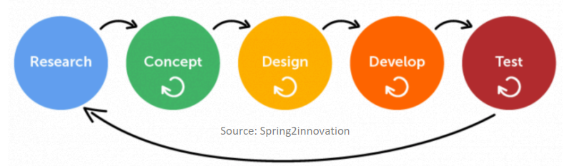
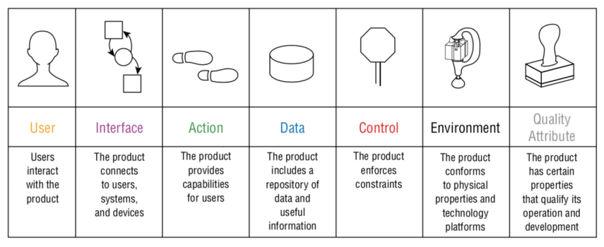

Diseño de sistemas interactivos
Diseño de sistemas interactivosInformaciónRecursosCuestionariosTest 1Web ComponentsIntroducciónTema 1La interfazDiseño de Sistemas InteractivosUsabilidad vs. Experiencia de UsuarioHCIEtapas en HCI – OlasPrimera OlaBackgroundFocoTeoríaMétodosContribución y ValoresSegunda OlaBackgroundTeoríaSituated Action o Acción situada (Rogers)Distributed Cognition o Cognición DistribuidaMétodosContribución y ValoresTercera OlaBackgroundTeoríaMétodosContribución y ValoresUser Centered Design (UCD)FasesVentajasTema 2: Primera fase UCDContexto de DiseñoTécnicas básicas de recogida de datosInvestigación PreviaClaves para Recogida de DatosCaptura de DatosEntrevistasCuestionariosFocus GroupsObservaciónTema 3: Análisis de Estudios de CampoTipos de Datos y AnálisisAnálisis CualitativoCategorización de datosIdentificación de patrones y temasAffinity diagram o Diagrama de afinidadAnálisis de Situaciones claveConversation Analysis o Análisis de la ConversaciónVideo Analysis & Interaction AnalysisAnálisis CuantitativoTabla de frecuenciaGráficos EstadísticosBoxplot o Diagrama de cajas y bigotesGráficos para DistribucionesGráfico de barrasPolígono de FrecuenciasHistogramaGráfico de sectoresGráfico de líneasGráfico de DispersiónResultadosTema 4: Empezando el proceso de diseñoResúmenesStoriesNotacionesNotaciones informalesNotaciones rigurosas o establecidasRequisitosRequisitos y directrices de diseñoTiposAtomic Requirements Shell de Volere (Robertson and Robertson, 2014)User StoriesPersonas y ScenariosPersonas (Cooper, 1999)Scenarios/EscenariosUse Cases o Casos de Uso
Información
Teorías: Elena Márquez Segura (Coordinadora) elena.marquez@uc3m.es
Prácticas: Pablo Acuña pacua@inf.uc3m.es
Recursos
Claves para entender Angular - Qué es y cómo se utiliza este framework
Guía de iniciación al data binding en Angular | Qué es y cómo se utiliza
Cuestionarios
Test 1
https://aulaglobal.uc3m.es/mod/wooclap/view.php?id=3117738&redirect=1
El contexto de diseño caracteriza...
- ... la situación/práctica/fenómeno/actividad para la que se va a diseñar
Verdadero o Falso: El contexto de diseño considera, entre otras cosas, quiénes son los/as usuarios/as, sus características, necesidades, deseos...
- Verdadero
Obtener consentimiento por parte de los/as participantes (usuarios/as)...
- Todas las anteriores (participantes y entrevistados)
En entrevistas y cuestionarios, las preguntas cerradas tienen sentido cuando...
- ...tenemos claro el foco y objetivo de la investigación
En general, esta es una pregunta correcta en una entrevista: "¿Qué problemas tienes con este producto?"
- Falso
En general, esta es una pregunta correcta en una entrevista: "¿crees que el producto debería ser más pequeño y barato?"
- Falso
Marca todas las correctas. Un "Contextual Inquiry"...
- … se puede considerar una técnica etnográfica
- … es una técnica de observación directa en la que el/la investigador/a mantienen un rol activo, preguntando a medida que van observando
Un Experience Sampling Method (ESM) es...
- ... es una técnica cualitativa de observación indirecta parecida al diario, en la que se mandan prompts o recordatorios a los/as participantes
Marca todas las respuestas verdaderas acerca de Embodied Interaction
- … se puede referir a cualquier sistema interactivo, desde móviles y ordenadores, hasta videojuegos de movimiento
- … es un enfoque de diseño y estudio de sistemas interactivos que se centra en, y saca partido de cómo las personas entienden y actúan en el terreno físico y social
Señala todas las respuestas correctas acerca del análisis de datos
- Se pueden tener datos cualitativos y hacer análisis cuantitativos y viceversa
- En análisis cuantitativo, podemos encontrarnos variables cualitativas y variables numéricas
Web Components
Evolución de los paradigmas de programación:
- Programación monolítica.
- Programación procedimental – Encapsula datos locales.
- Programación POO – Encapsula datos y funciones.
- Programación conducida por eventos – Facilita GUI a partir de componentes.
Paradigmas programación web: Ha seguido una evolución parecida.
- HTML Monolítico (la web es estática)
- HTML (datos + estructura) + CSS (estilo gráfico) + JS (comportamiento)
- Antes se mandaba el HTML completo, pero hoy en día se envía JSON que son más ligeros y transmiten solo datos.
WEB COMPONENTS (W3C + Google -> web components): Para personalizar y facilitar el desarrollo web, se crean:
- Custom HTML Components: Definir nuevas etiquetas.
- HTML Template: Preparados para enmaquetar.
- Shadow DOM: Encapsula elementos DOM.
- HTML imports: Librerías, que permiten modularizar aplicaciones.
Su uso facilita la programación web y la compatibilidad con cualquier navegador.
Problemas del estándar: Incompatibilidades entre navegadores y HMLT imports obsoletos.
Frameworks (React/Vue.js/Angular)
Angular: Tiene una curva de aprendizaje compleja. Es bueno para aplicaciones complejas como intranet, extranet, app corporativas. Además, es un Framework completo dirigido a desarrolladores corporativos.
Introducción
HCI - Human-Computer Interaction: Interacción Persona-Ordenador.
IxD - Interaction Design: Diseño de Interacción.
Usability: Usabilidad.
UX - User Experience: Experiencia de Usuario.
UCD - User-centered Design: Diseño Centrado en el Usuario.
Un buen diseño muy importante para el uso de los sistemas, incluso puede ser cuestión de vida o muerte. En los que un mal diseño tiene consecuencias graves, en estos se usa redundancia y cosas claras. Aunque la mayoría de las veces son problemas cotidianos.
Affordance: Que te dice como hacer, que te permite, que se ofrece. Gibson(70s) en el entorno medible relacionales, Norman(80s) son fáciles de percibir y Gaver(90s) perceptibles falsas ocultas.
Secuenciales: Al realizar una nos lleva a otra. Girar un pomo y empujar para abrir.
Anidadas: Una puerta en un marco, con un pomo. Una dentro de otra.
Ejemplo: Un asa pide tirar y una placa empujar.

Mapping: Coincidencia entre los controles y la representación física.
Tema 1
HCI - Human-Computer Interaction: Interacción Persona-Ordenador.
IxD - Interaction Design: Diseño de Interacción.
Usability: Usabilidad.
UX - User Experience: Experiencia de Usuario.
UCD - User-Centered Design: Diseño Centrado en el Usuario.
IS - Information Systems: Sistemas de Información.
Sistema Interactivo: Aquello que reciben datos y realizan una acción o proceso.
La interfaz
Medio de interacción y comunicación con los usuarios, que permite enviar y recibir información.
Sistema: Objeto complejo formado por múltiples partes relacionadas e interconectadas.
Interactivo: Que permite la interacción.
Interacción: Acción o relación recíproca entre varios objetos.
Diseño de Sistemas Interactivos
Campo multidisciplinar que se centra en diseñar el comportamiento de sistemas con los que interactúan los usuario y forman parte. Para apoyarlo en su día a día.
Trata de crear experiencias que aumentan, extienden, mejoran, aporta, construyen, facilitan la manera en la que la gente trabaja o actúa. Desarrollar tecnología que sea fácil y agradable de usar para los usuarios.
Equipos multidisciplinares, hay que tener en cuenta muchos factores para el diseño centrado en usuario.
Usabilidad vs. Experiencia de Usuario
Usabilidad: La eficacia, la eficiencia y la satisfacción de usuarios determinados alcanzando objetivos concretos en un contexto determinado.
UX: Percepciones y respuestas resultado del uso (y anticipación de uso) de un producto, sistema o servicio. En definitiva, todos los aspectos de la experiencia del usuario al interactuar con un producto, servicio, entorno o establecimiento.
HCI
HCI en el inicio, una pequeña muy pequeña del diseño.
Hoy en día, es un campo muy amplio.
Evolución de HCI en olas.
Etapas en HCI – Olas
Distintos paradigmas (modelo/superteoria), programa, y de investigación y diseño. Etapas.
Coexisten, a veces en conflicto, lo que afecta lo que entendemos por verdad. No está bien definida la frontera o distinción.
Primera Ola
Es el primer paradigma (Harrison): Ergonomía y Factores Humanos, psicología + inteligencia.
Muy pragmático, ateórico.
Metáfora: Interacción vista como el encaje entre la persona y la máquina. El objetivo, es que encajen bien para que funcione.
Foco: Identificar problema concretos en la interacción que crean mal funcionamiento y desarrollar una solución para que encajen.
Background
HCI emerge en 80s, encaje de persona-maquina.
Se habla de factores humanos, dimensiones, capacidades, y limitaciones de usuarios.
Influencia: Ingeniería y psicología trabajando mano a mano.
Metáfora: Mente y computadora como un procesador de información acoplada.
Investigación en universidades y laboratorios industriales.
Tecnología: WIMP.
Foco
Trabajo: Centrado en la oficina, ordenadores de sobremesa.
Trabajo, tareas, productividad. Muy centrada en la máquina.
Estudios: Evaluaciones de sistemas existentes. Análisis de características de uso en situaciones específicas.
Teoría
User friendly – Amigable para el usuario.
De usabilidad: Útil, eficiente, eficaz, fácil de aprender y satisfacción.
El objetivo es decrementar la carga mental, reducir el abismo.
Abismo (golfo) de ejecución: Diferencia entre las acciones que el usuario quiere hacer para alcanzar el objetivo y las acciones permitidas por el sistema.
Abismo de evaluación: Diferencia entre lo que esperaba el usuario observar y lo que el usuario ve, le requiere más esfuerzo.
Cuanto más tamaño de abismo, más dificultad de entender.
Affordances (Gibson, Norman, Gaver)
Gibson: Relativas a las capacidades de los actores, no todos los perciben, pero son independiente de su percepción, aunque no lo veas no quiere decir que no esté.
Norman las introduce en HCI en relación con el diseño e introduciendo el factor de la percepción.
Cuando está bien hecho, el usuario solo mirando es capaz de reconocerlo, sin dibujos, ni etiquetas.
Gaver: Perceptibles, falsas, ocultas.
Secuenciales: Una te da información para hacer otra.
- Anidadas: Una affordance sirve como contexto de otra.
Modelo conceptual vs. Modelo mental (Craik)
- Ideal vs. Realidad
- Modelo conceptual: Como el diseñador lo concibe e implementa.
- Modelo mental: Como piensa el usuario que funciona el sistema.
- El diseñador debe basar su modelo conceptual en cómo piensan los usuarios, hay que preguntar y usar experiencias en productos previos.
Métodos
En el laboratorio, experimentos controlados.
Modelos de como la persona realiza una tarea, como GOMS y KLM.
Asume usuarios que saben, ayuda a tomar decisiones de la interfaz y enfoque reduccionista.
Modelado de factores humanos, especificaciones, guiar y requisitos rígidos.
Testeo sistemático de usabilidad (Rubin and Chisnell)
Utilidad: Conseguir objetivos.
Eficiencia: Completar tarea en el menor tiempo. Se mide en tiempo.
Eficacia y efectividad: Completar tarea de manera correcta. Se mide en ratio de errores.
Fácil de aprender: Se mide en tiempo de aprendizaje.
Satisfacción: Percepción de usuarios, opinión, sentimiento. Se mide con valores y rangos.
Evaluación de expertos. Heurísticas.
Contribución y Valores
Evaluación de sistemas.
Análisis de tareas.
Especificaciones de diseño, importante para fases posteriores ciclo de diseño.
El diseño, no están importante, es un vehículo.
Investigación en HCI.
Segunda Ola
Background
1990s
Se pasa de usuarios a personas, productos a sistemas, usuarios novatos a usuarios más experimentados, de individuos a grupos y de laboratorios a entorno de trabajo.
Se mira a la interacción más que al computador.
Contexto: Mira al espacio de trabajo y la gente alrededor.
De análisis a Diseño: De trazar requisitos de usuarios a prototipado iterativo, de usuarios al final a diseño centrado en usuario (UCD)
Teoría
Situaciones reales y complejas en el entorno de trabajo.
Importancia del contexto.
Coordinación de acción conjunto: Coincidencia, colaboración y cooperación.
Situated Action o Acción situada (Rogers)
La interacción se entiende situada como atada al ahora y aquí en ese contexto.
La gente no son maquinas, no siguen procedimientos a rajatabla.
Los planes cambian en interacción con el entorno, cambia según vamos avanzando por que vamos viendo el progreso.
Perspectiva interaccionista y ecológica: Relación entre estructuras de acción y los recursos ofrecidos por el contexto físico y social.
Objetivo: El diseño de interacción debe apoyar la acción situación (la acción que suele pasar en un lugar determinado) y la creación de significado (según la circunstancia).
Estudio:
Escenarios de trabajo.
Contraste entre lo que la gente hace vs. Lo que se supone que tienen que hacer.
Métodos etnográficos.
Nos quedamos con:
Para diseñar tecnología para el trabajo, hay que considerar los detalles de las prácticas de trabajo.
Importancia de trabajo de campo (in the wild) para entender el contexto y la situación.
Critica: Muy centrado en lo particular, difícil generalizar.
Distributed Cognition o Cognición Distribuida
De ciencias cognitivas. Cognición y conocimiento no están confinados en el individuo, si no en su entorno.
“La mente está en el mundo” distribuido a través de un “sistema cognitivo”
Usos: Estudio de trabajos que cuentan con espacio como lugar de cognición.
Análisis: interacción entre individuos, el medio representacional, el espacio donde la actividad tiene lugar.
Útil para: Cambiar diseños para mejorar rendimiento.
Examinar (a nivel de evento, muy al detalla):
La resolución distribuida de problemas.
Medios/canales de comunicación.
Rol de comunicación verbal y no verbal.
Mecanismo de coordinación.
Como la información y el conocimiento se comparte, acceder, propaga…
Como se coordinan las unidades distribuidas.
Anotar: Incidente, problemas, caminos de información/comunicación.
Resultados: Explicación de interdependencias complejas entre los elementos del sistema cognitivo.
Critica: No rápido y sucio (“quick and dirty”), receta…
Métodos
Proactivos.
User-Centered Design Processes (Norman and Draper)
Participatory Design o Diseño Participativo: Democratizar el proceso de diseño, el usuario participa en el diseño.
Investigación y diseño contextual.
Análisis: Sociología, antropología, etnometodología. Trabajos de campo, Técnicas observacionales y Microanálisis.
Contribución y Valores
Emergencia CSCW (Computer Supported Cooperative Work): Extiende el foco de la diada persona-computador a grupos de trabajo. Centrado en tareas colaborativas/cooperativo.
Perspectiva Situada.
Diseño como disciplina, Design Science.
Importancia de los usuarios en el proceso de diseño, UCD.
Tercera Ola
Background
2000s
Los Usuarios pasan a llamarse Actores o Participantes.
El contexto y el campo de aplicación se amplía, del lugar de trabajo al hogar o calle, del trabajo al día a día.
Mas allá del rendimiento, y la información sobre la vida humana.
Elementos en la vida humana: Cultura, Emociones, Experiencia.
La tecnología también amplia alcance, tecnología móvil, ubica, ambiental, tangible… y espacio híbridos.
Teoría
De lo cognitivo a lo emocional. Experiencia estética, desde una perspectiva pragmática/cultural/fenomenológica.
Embodied Interaction: Es la creación, manipulación y compartición de significado mediante la interacción con artefactos físicos. Enfoque de diseño que tienen muy en cuenta aspectos y contextos físico y sociales. Inspirado en Social Computing y Tangible Computing. Aunque se usa para hablar de sistemas gestuales y de movimiento NO existe una interacción que no sea embodied, pero hay que ver como los usamos.
Embodied phenomena: Que nos lo encontramos en el mundo físico más que abstracto.
Embodiment (encarnación, la corporalidad): La manera en la que nos encontramos la realidad física y social en el mundo de todos los días. Significa poseer y actuar mediante una manifestación física en el mundo.
Cambio de perspectiva.
Revisión de compromisos hechos hace 70 anos. Primaba minimizar tiempo de computación, primaba la computación sobre los usuarios.
Nuevas tecnologías: Móviles, relojes, gafas, coches…
El problema: Esto empeora los efectos de esos compromisos.
Necesitamos nuevas maneras de interactuar con computadores, que se ajusta mejor a nuestras necesidades, habilidades, valores…
Para una nueva interacción y experiencia, se explota nuestra habilidades y familiaridad con objetos del día a día, para que la computación se manifieste como si fuera un objeto del día a día..
Métodos
Más allá de los usuarios. Es un enfoque más explicativo.
Diseño en el centro:
- Design Thinking: Inspirado en prácticas, en artes, en diseño. Pensamiento “no racional” en el sentido de “no científicos”. Pensar fuere de la caja, out of the box. Innovación, se centra en lo que aún no existe.
- Embodied design Methods: Métodos que usan corporalidad de los diseñadores y usuarios.
- Research through Design (RtD): Conocimiento a través del diseño.
Contribución y Valores
De centrarse en la información, a centrarse en la acción, en las sensaciones, emociones.
Conceptos: Sentir y significado, embodied.
Artefactos: Propósitos sociales, y personales + profundos.
Énfasis estético: Emoción, sensación, disfrute, placer, social, playful, embodied, divertido…
Embodied Interaction, “engagement” físico y social.
Métodos que tienen el diseño en el centro.
De interpretación objetivo a subjetiva, de individuo a colectivo.
User Centered Design (UCD)

Proceso iterativo de diseño, centrado en los usuarios.
Involucrados a través de todo el proceso de diseño.
Múltiples técnicas para entender sus necesidades, deseos, valores… Investigativas y Generativas.
Objetivo: Crear experiencias y productos usables, accesibles, etc.
Fases
Entender el contexto de diseño: Necesidades, deseos, etc. llevan a requisitos y valores de diseño.
Documentación, Entrevistas, Cuestionarios, Observación y Focus Group.
Generan Personas, Escenarios y Requisitos
Diseño.
Sketch, Paper Prototype, Wireframes, Mockup y Software Prototype.
Evaluación vs. Contexto de diseño: usuarios y requisitos.
Formativa//Sumativa, En el lab//In the wild, Usabilidad, Métodos de inspección, Experimentos, Entrevistas y observaciones.
El diseño centrado en usuarios es un proceso caro, requiere mucho tiempo hablar con personas, producir prototipos y demás fases del proceso. Pero merece la pena este coste para diseñar sistemas bien.
Ventajas
Diseñador no es lo mismo que Usuarios.
Problemas, necesidades y deseos que vemos no son lo mismo que los que tiene el usuario.
Contacto con usuarios, aumenta la empatía y que se lleve a cabo un diseño ético, que respete las necesidades y prácticas de los usuarios.
Involucrar a usuarios, hace que sea más probable que se cumplan sus necesidades y requisitos, lo que hace que tengamos más ventas y menos problemas de atención al cliente.
Pensar en el contexto y tareas específicas del usuario, hace que haya menor error humano y más seguridad, se tienen en cuenta más factores que hay cuando se usa el sistema.
Tema 2: Primera fase UCD
Contexto de Diseño
Conocer al usuario, sus objetivos, características y contexto.
Caracterización de la situación, fenómeno, práctica o actividad para la que se va a diseñar.
Quienes son los usuarios, sus objetivos, necesidades, actividades que realizan, espacio donde tiene lugar y que recursos tiene.
Técnicas básicas de recogida de datos
Sirven para describir y acotar el contexto.
Investigación Previa
Estudio de documentación
Manuales, legislación, datos estadísticos del gobierno, etc.
Feedback directo, mediante logs, muestras de email, investigación de mercado (da información actual), user testing o libro blanco. Redes sociales o Reviews.
State of the art (“lo último”) Ver lo que hay
Producto que la gente usa en nuestro contexto de diseño. Para la innovación es descubrir la oportunidad.
Claves para Recogida de Datos
El objetivo es entender mejor el espacio de diseño.
Se condiciona por la técnica, los datos, el análisis, etc.
Es importante formularla más o menos formalmente, se parte de una manera más general y se va concretamente.
Identificar a los participantes, para los usuarios que vamos a diseñar.
Hay que coger muestras del conjunto de participantes, no se puede acceder a todos.
Tipos de muestras:
Muestreo probabilístico:
Aleatorio: Un número aleatorio de participantes.
- Estratificado: Grupo representativo.
Muestreo no probabilístico:
Conveniencia: Los que haya o se ofrezcan.
- Voluntarios.
Relación con participantes
Debe ser clara y profesional, informar de quién somos, que estamos estudiando, que haremos con la información y como se va a tratar sus datos.
Consentimiento: Proteger participantes e investigador.
Incentivos, por conveniencia para que haya más participantes, ya que puro voluntario es más difícil.
Triangulación: Investigación de un fenómeno desde al menos dos perspectivas:
- De datos, usando distintas fuentes.
- De investigadores.
- Metodológica: uso de distintas técnicas de recogida de datos.
Que sea metodológica.
Estudio piloto.
Versión reducida del estudio.
Se prueba esa versión antes del estudio principal, se realizan preguntas más dirigidas a saber si está bien el cuestionario qua a las propias respuestas, se realiza de forma iterativa. Identifica problemas y se aprende de errores. Sobre el protocolo a seguir, equipo, instrucciones, preguntas, cuestionarios.
Captura de Datos
Importante para análisis posterior.
Algunas formas de recogida de datos se auto-documentan, es decir que los datos indican todo, no hay que interpretarlos.
Muchas otras no, como la observación directa, entrevistas...
Técnicas
Anotaciones de campo:
Es una técnica más resumida con menor número de detalles.
Ventajas: Más flexible, menos logística y menos intrusivo.
Desventajas: Más difícil de escribir y preguntar, observar, ...
Grabación de audio:
Alternativa a las anotaciones, que se pueden transcribir posteriormente.
Facilita la documentación.
Grabación de video:
Proporciona captura visual y auditiva.
El problema es que requiere más planificación y logística, como cámaras, localización o baterías, y es más intrusivo.
Audio y video: Sin tratar (raw data)
Se puede consultar en cualquier momento y revisar.
Entrevistas
Consiste en un entrevistador preguntando a usuarios con un objetivo. Normalmente de forma síncrona.
Tipos, dependiendo del control de entrevistador y libertad de los participantes:
No estructuradas: Sin protocolo o preparación.
Preguntas abiertas, que son explicativas que nos permite extraer conocimiento.
La ventaja es que permite respuestas más profundas y más datos, lo que permite entender mejor el contexto de diseño.
Datos complejos, aunque interrelacionados.
Estructuradas: Más control.
Preguntas cerradas (lista de opciones) y predeterminadas, como un cuestionario. Preguntas cortas, claras y sencillas.
Las mismas para todos los participantes.
Se realizan cuando se tiene un objetivo claro, una serie de preguntas específicas y repuestas esperadas.
Requieren menor tiempo.
Semi-estructuradas
Combina de los otros dos tipos.
Guion con:
Serie de temas a cubrir, y preguntas planificadas.
- Preguntas específicas de seguimiento o para sonsacar más información.
Probing o prompts, preguntas neutras como: ¿Algo que añadir?
Herramientas de apoyo: Gráficos, imágenes de la experiencia.
Planificación:
Donde:
Online: Es más cómodo, pero necesita logística extra.
- En el sitio: Se realiza en el entorno de uso por lo que se observa el entorno, suscita preguntas.
- Sitio neutro o contexto artificial: Como un laboratorio. La logística está más a mano, pero es más difícil poner en situación y contexto artificial.
Protocolo (no intimidar):
Introducción: Quién eres, objetivo, temas éticos, consentimiento.
- Preguntas demográficas. Preguntas de warm-up.
- Sesión principal: Temas y preguntas clave.
- Preguntas de cool-off: Preguntas finales.
- Cierre: Espacio para que pregunten, agradecimientos e indicar que ha terminado.
Desarrollar las preguntas:
Depende del tipo de entrevista.
Evitar: Preguntas largas, confusas, jerga específica, preguntas peligrosas que condicionan respuestas (asumir algo, coacción o se les pueda dar la vuelta), cerradas y binarias sin seguimiento, y preguntas de doble-cañón (no queda claro a cual responde, porque hay varias posibles).
La documentación, equipo y material para recoger datos, gestión de la cita y espacio, y realizar la entrevista.
Cuestionarios
Consiste en una serie de preguntas. Normalmente de forma asíncrona.
Para obtener respuestas a preguntas específicas de muchos participantes.
Las preguntas pueden ser: Preguntas abiertas o cerradas.
Ventajas: Mayor alcance y distribución, más conveniente para los participantes.
Desventajas: Menor riqueza que una entrevista, aunque similar a una entrevista estructurada.
Diseño
Estructura:
Información acerca del estudio y consentimiento, tiempo estimado de realización, instrucciones claras de cómo completarlo.
Preguntas demográficas (identificar el tipo de persona).
Preguntas especificas agrupadas por temática.
Orden: Lógico para facilitar la realización, las preguntas más generales primero.
Distintas versiones para poblaciones distintas.
Estilo: Compacto pero no cargado y mostrar el progreso en el cuestionario.
Evitar: Preguntas mal formuladas, preguntas negativas para evitar que pueda equivocarse y falta de claridad, ya que no estamos aclararlo.
Formatos
Check boxes y rangos. Ejm: O 18 to 21
Rating Scale:
Escala semántica diferencial: Good __ __ __ Bad
- Likert: Normalmente de 5 a 7 puntos, según como preciso queremos que sean. Orden consistente. Número par para forzar la no neutralidad.
Focus Groups
Investigación cualitativa. Consiste en una entrevista en grupos de 3-12 personas.
Muestra de población representativa: Distintas clases de usuarios.
Se les pregunta opinión, percepción, creencias, actitudes, prácticas respecto a una situación, producto, servicio, concepto.
Liderado por un facilitador, que lanza los temas preparados, modera e invita a participar a todos.
Ventajas: Salen temas importantes y sensibles, se descubren diferencias de opiniones y posturas, y puntos en común.
Observación
Ver como se usa el sistema, ya sea de forma directa o indirecta.
Útil en muchas fases del proceso de diseño:
- Pronto: Entender el espacio de diseño, los usuarios, contexto y las tareas.
- Más adelante: Ver el diseño en uso, como mejora/aporta a esas tareas.
Se pueden llevar a cabo en el campo o en un espacio controlado.
Pueden ser directas (en el momento) o indirecto (grabaciones de actividad).
Directas en el campo
Muy difícil explicar lo que hacen exactamente, hay que verlo.
Difícil tener el panorama completo, estar en el sitio ayuda.
Proporciona detalles de cómo comportan los usuarios, que hacen, cómo lo hacen.
Importante equilibrar entre lo que surja y el objetivo claro de la observación.
Ventaja: Riqueza de datos.
Desventajas: Necesita logística, acceso a los espacios y análisis.
Planificación y realización:
Marco de observación.
Grado de participación.
Documentación y registro de datos.
Acceso y aceptación.
Inclusión de distintas perspectivas.
Temas sensibles (cultura, acceso a espacios privados)
Marco o Estructura de Observación para manejar la complejidad:
Sencillo: Más posible añadir puntos nuevo.

Detallado: Más específico.

Grado de participación: Infiltrado (Activo, participa el observador en primera persona, difícil disociar participante y observador) o Ajeno (Pasivo, normalmente en el lab).
Planificación y realización:
Atención equilibrada a participantes.
Re-focus: a medida que se surgen aspectos relevantes.
Actividad intensa, puesto que se anota durante observaciones y al final del día.
Etnográficas:
Entendimiento detallada, con matices.
Rol: participant observer, activo.
Observaciones directas+entrevistas, cuestionarios, estudios de artefactos.
Importante, llevar mente abierta, naïve.
Datos: Que hace y dice la gente.
Recogida datos: Notas de campo, documentos, fotos,...
Técnicas etnográfica:
Investigación contextual: Mezcla entrevista y observación. Van haciendo cosas y comentando que hacen.
Rol: activo, modelo de aprendiz.
Entrevista contextual: Observación, discusión y reconstrucción de eventos pasados.
4 principios: contexto, relación, interpretación y foco.
Recogida datos: Anotación, grabaciones de audio y video. Anotaciones al final de las sesiones.
Directivas en espacio controlado
En el laboratorio, más formal y más control, se sigue un protocolo.
Más intrusivo, van a un espacio controlado.
Ventajas: Control de variables.
Desventajas: Pretensión y situación artificial.
Foco: Acciones y comportamientos concretos.
Datos: Video, fotografías, anotaciones.
Hay que tener en cuenta cómo gestionar el equipo.
Técnicas:
Think Aloud: Usuario piensa en voz a la vez que actúa, lo que nos permite entender lo que piensan y sus modelos mentales y expectativas.
Diarios: Los participantes documentan su experiencia.
Auto-documentación de participantes, de forma regular.
Ventajas: Lo hacen ellos, no requiere mucho tiempo de investigadores. Menos logística, es un diario.
Desventajas: Depende plenamente de los participantes, es difícil para los usuarios seguirlo haciendo.
Experience Sampling Method (ESM): Muy parecido al diario. Con prompts en momentos concretos determinados por tiempo o eventos. Invitan a la acción inmediata.
Logs de Interacción: Software en un dispositivo que captura lo que hace el usuarios para posterior análisis.
Captura: clics, key press, tiempo empleado.
Se combina con otras fuentes de datos.
Ventajas: No intrusivo.
Desventajas: Aspecto ético.
Logística: Herramientas de visualización.
Elegir una técnica: No hay una adecuada para todos los casos. Depende de muchos factores: proyecto, objetivo, usuarios.
Lo mejor es utilizar triangulación, combinar técnicas.
Tema 3: Análisis de Estudios de Campo
Es importante tener evidencias de cómo es realmente el contexto, no solo suposiciones (assumptions) y verdades no fundadas (claims), para esto debemos hacer una buena elección de técnicas de investigación. Caer en este problema es frecuente, lo importante es saber que no son verdad.
En esta fase buscamos definir unas técnicas para concretar el contexto de diseño y saber más, todavía no buscamos la solución.
El análisis depende:
Del objetivo de tu trabajo de campo.
De las técnicas de investigación y recogida de datos.
De tus datos obtenidos con esas técnicas elegidas.
Posibles objetivos:
Entender a los usuarios, es importante diferenciar entre usuario y otros stakeholder (parte interesada).
Entender actividades, objetos involucrados, espacio de la interacción y posibles problemas y fricción.
Tipos de análisis: no tiene por qué coincidir con el tipo de datos.
Cuantitativos: Proporción, porcentaje, medias...
Cualitativos: Temas emergentes y patrones, impresiones y reacciones prominentes...
Los datos deben ser rigurosos y precisos, expresado numéricamente, evitando interpretaciones, para poder medir.
Tipos de Datos y Análisis
Entrevistas:
Datos: Notas y grabaciones.
Tratamiento: Transcripciones y anotaciones extendidas.
Preguntas cerradas: normalmente cuantitativos.
Preguntas abiertas: principalmente cualitativo, pero también cuantitativo.
Cuestionarios:
Datos: Respuestas.
Tratamientos: Filtrado de datos.
Preguntas cerradas: normalmente cuantitativos.
Preguntas abiertas: principalmente cualitativo, pero también cuantitativo.
Observaciones:
Datos: Muy ricos; notas, logs y grabaciones.
No es un análisis sencillo, hay muchos datos y debemos equilibrar.
Tratamiento: Sincronizar fuentes, anotaciones extendidas, transcripciones, citas, fragmentos de acciones o interacciones.
Análisis: según el tipo de datos.
Cualitativo: Anotaciones, grabaciones...
- Cuantitativo: logs, grabaciones...
Análisis Cualitativo
Se identifican en el proceso de recogida de datos.
Categorización de datos
Anotaciones, entrevistas, transcripciones, se pueden analizar con distinta granularidad
- Gruesa: Identificación temas, a nivel general.
- Fina: A nivel de palabra, más detallado.
Esquema de categorización:
- Bottom-up: De los datos hacia lo general.
- Top-down (deductivo): esquema establecido con anterioridad (teoría, métodos), de lo general hacia los datos.
- Mezcla
Importante el rigor, el esquema de categorización tiene que ser fiable y debe haber concordancia de los distintos evaluadores.
Comprobación de nivel de discrepancia: Coeficiente kappa de Cohen, el nivel de acuerdo que hay. Si es bajo, mal entrenamiento y problemas en el esquema de categorización.
Técnica: Content Analysis o Análisis de contenido
Se utiliza para cualquier tipo de documentos y "textos" (video, periodista, citas...)
Es una técnica de conteo de ocurrencias, ya sea temas y categorías como de palabras clave.
Descripción cuantitativa, objetiva, y sistemática del contenido.
Cuantifica el contenido en términos de categorías.
Identificación de patrones y temas
Emergen a medida que te familiarizas con los datos.
Los objetivos del estudio orientan el foco de temas y patrones.
Affinity diagram o Diagrama de afinidad
Organización de notas/ideas/información según una jerarquía por similitud.
Es un proceso inductivo, que surge de un flujo de información y se agrupa, bottom-up.
Proceso:
- Codificación abierta u Open coding: Desgranar los datos en partes discretas, etiquetas.
- Codificación axial o Axial coding: Agrupación de las notas por similitud.
- Conexión: De las categorías y etiquetas.
- Creación de categorías globales.
- Revisión de datos con base en estas categorías globales.
Generación de conocimiento y síntesis, para extraer conclusiones.
Se sacan requisitos y necesidades, y se concreta el contexto de diseño.
Análisis de Situaciones clave
Centrado en comportamientos clave por su impacto:
- Critico: para el desarrollo de la actividad que se estudia.
- Deseable: Impacto positivo.
- Indeseable: Impacto negativo
Hay que identificar incidentes significativos por parte de los usuarios (entrevistas, retrospectiva) y por los propios investigadores (observación directa, video análisis). Nos permite identificar factores contextuales, elementos y aspectos clave determinantes de acción, experiencia...
Conversation Analysis o Análisis de la Conversación
De etnometodología, cómo interactúa la gente y dinámicas de interacción.
Microanálisis: Como se desarrolla la conversación, secuencia y estructura de la conversación.
Sin suposiciones, ni conjeturas.
Búsqueda de patrones
Como la gente se coordina, se entiende, actúa conjuntamente.
Video Analysis & Interaction Analysis
Micro o macro.
Macro: Idea general, una primera pasada.
Decisión de elementos clave: momentos o incidencias críticas.
Análisis en profundidad: Descripción de lo ocurrido, con palabras claves y pantallazos.
Herramientas: Manual, hoja de cálculo o software específico.
Análisis Cuantitativo
Expresado en forma numérica. Magnitud, cantidad, tamaño, grado, orden... de atributos de participantes.
Compila, ordena, resume, y presenta datos para permitir interpretaciones posteriores.
Organizar los datos, en una estructura estándar.
Filas: sujetos. Columnas: variables.
Tipo de variables:
Cualitativas: No operaciones aritméticas.
- Ordinales: Siguen un orden o secuencia. Ej: Meses de año.
- Categóricos: No siguen un orden. Ej: Estado civil.
Numéricas: Operaciones aritméticas.
- Discretos: Valores enteros. Ej: Edad.
- Continuos: Valores en un intervalo. Ej: Sueldo.
Análisis de Datos numéricos:
Medidas de tendencia central:
Media: Promedio.
- Mediana: El punto central.
- Moda: Valor más frecuente.
Medidas de dispersión: Variabilidad de una distribución respecto a una medida.
Desviación típica: Desviación con la media.
- Rango R= Max-Min.
- Desviación con la mediana: Cuartiles.
- Rango intercuartílicos, IQR: Q3-Q1
Tabla de frecuencia

Datos categóricos.
Los datos numéricos con variables continuas, y discretas con muchos valores pueden ser inmanejables, para solventarlo:
- Dividir el rango en clases del mismo tamaño y sin solapamientos.
- Nueva tabla de frecuencias.
- Facilita representación gráfica posterior.
Gráficos Estadísticos
Representación visual de datos estadísticos.
Útil para captar la atención, presentación de información sencilla, clara y precisa, facilita comparación de datos, destaca tendencias y diferencias, e ilustrativos.
Boxplot o Diagrama de cajas y bigotes
Para medidas de tendencia central y dispersión.

Visualiza medidas de desviación con la mediana:
- Tres cuartiles: Q1, Q2, Q3.
- Caja: Q1 y Q3.
- Mediana.
- Bigotes: mínimo y máximo.
Gráficos para Distribuciones
Gráfico de barras

Frecuencias de una variable cualitativa o discreta. Sencillo, agrupado y apilado.
La altura indica la frecuencia o porcentaje y la barras son categóricas, no valores numéricos.
Útil: Comparar magnitudes.
Tipos: Verticales u horizontales.
Polígono de Frecuencias
Visualización de frecuencias de cada una de las categorías.

Histograma

Representa las frecuencias de una variable cuantitativa continua.
Área de la barra es la frecuencia y el eje son intervalos de variable continua.
Gráfico de sectores

Representación circular de las frecuencias relativas.
Variable cualitativa o discreta, se muestran en porcentajes.
Útil: Cuando hay pocos categorías.
Gráfico de líneas

Representa relaciones entre dos variables.
Una o varias variables.
Útil para ver tendencias.
Gráfico de Dispersión

Relación entre dos variables ene ejes cartesianos e informa del grado de correlación.
Resultados
Requiere habilidad, esfuerzo y trabajo.
Distintas maneras de presentar el material
Depende:
- Del objetivo de tu trabajo de campo
- De tus técnicas de investigación y recogida de datos
- De tus datos obtenidos
- Del análisis realizado
- De la audiencia.
Propósitos finales:
- Derivar requisitos, necesidades, design drives.
- Evaluar un producto o en desarrollo.
Múltiples representaciones: gráficas, tablas, descripciones textuales, temas, categorías...
- Presentar los resultados.
- Como background o evidencia de conclusiones.
- Para dar rigor, poner el materia raw a modo de anexo.
Tipos: Resúmenes, Anotaciones rigurosas o Stories.
Tema 4: Empezando el proceso de diseño
Interpretación y transformación de los resultados del análisis en requisitos y directrices de diseño. Se pasa de usuarios a personas y se traza el estado deseado.
Los análisis iniciales antes de interpretar y transformar hay que tenerlos representado de una manera adecuada, volviéndolos a analizar, algunos métodos son los siguientes.
Resúmenes
El objetivo es tener una visión general, un resumen general. Se trabaja con datos cualitativos, cuantitativo y mixtos.
Se pueden emplear múltiples representaciones como gráficas, tablas, temas o categorías, para facilitar el seguimiento de los datos. Van acompañados de citas, anécdotas, imágenes o videos para que sea más ilustrativo y presentar evidencias empíricas.
Stories
Storytelling o narraciones, manera intuitiva de comunicación de ideas y experiencias. Muy usadas en IxD como base para el diseño, se itera el proceso y se mejora el producto.
Extraídas de anécdotas reales de los usuarios (contadas en entrevistas o cuestionarios) o de construcciones en base a resultados (observaciones, encuestas).
Es importante especificar procedencia y veracidad, para dar validez a las historias.
Son útiles para ilustrar otro tipo de prestaciones de datos, proporcionar evidencias y aumentar la credibilidad, y para inspirar el diseño.
Notaciones
Aspectos clave (necesidades, aspiraciones, expectativas) del contexto de diseño actual o del diseño futuro que se busca.
Se basan en deseos y necesidades actuales y objetivos de usabilidad y UX.
Es importante entender el contexto de diseño para proceder de esta manera, están prefijadas por el proyecto o se producen durante el proceso de diseño.
Notaciones informales
No hay una sintaxis o estructura establecida, es más abierta por lo que se puede producir ambiguos.
Mismo aspectos/dimensiones que las notaciones rigurosas.
Ventaja: Inspiran más y permiten innovar, al no ser tan rígidos.
Desventaja: No son tan preciso y no siguen de guía
Notaciones rigurosas o establecidas
Sintaxis y semántica establecidas.
Tienen una estructura clara.
Ventajas: Guía de una manera más clara de que mirar en cuanto a conclusiones, y son más precisos.
Desventajas: No son flexible y no permiten la innovación.
Requisitos
Declaración que describe de manera clara, concisa y especifica aspectos y cualidades clave del producto, que debería hacer y cómo, en que entono se va a usar, por quien y como.
No es una listas de features (características).
Características: Específicos (no ambiguos y claro) , correctos, consistentes y verificables.
Lo importante es que los requisitos sean: Medibles, Específicos y bien documentados(vengan de una necesidad del usuario)
Requisitos y directrices de diseño
Se discuten, refinan, aclaran y revisan de manera iterativa.
No se pueden aislar de otras actividades de diseño, ambas están ligadas a la actividades de diseño y estas a ellos.
Base para empezar a diseñar, no son rígidos por ello se itera de manera continuada, pero no deben tampoco cambiar radicalmente sin motivo.
Son importante porque ayudan a evitar que un error se prolongó en el proceso y nos resulte más caro resolverlo. Los errores se pueden producir por: Falta de entendimiento con los stakeholders, análisis deficiente o unas directrices de diseño pobres.
Tipos
Ingeniería de Software: Funcionales y No funcionales.
Las 7 dimensiones de Gottesdiener y Gorman: Usuario, Interfaz, Acciones, Datos, Control, Ambiente(espacio) y Calidad.

Espacial/Ambiental: Espacio físico (luz, humedad, ruido o que hay), espacio social (usado por una persona o muchas, si es compartido o individual) y espacio tecnológico (tecnología necesario y limitaciones).
Características de usuarios: Edad, experiencia previa, circunstancias personales, capacidades físicas, nos permite sacar distintos requisitos.
Objetivos de usabilidad: Eficiencia, eficacia, satisfacción, facilidad de aprendizaje con la que unos usuarios determinado alcanza en un contexto determinado un objetivo concreto.
Objetivos de experiencia de usuarios:
- Percepciones y respuestas resultado del uso y/o anticipación de uso de un producto, sistema o servicio.
- Incluye: emociones, creencias, preferencias, percepciones, respuestas físicas y psicológicas, etc.
- En definitiva: Aspectos clave de la experiencia de usuarios/as al interactuar con un producto, servicio, entorno o establecimiento Algunos aspectos: usabilidad, funcionalidad, estética (experiential quality),contenido, el “look & feel,” y el atractivo sensorial y emocional. El cómo se siente
McCarty & Wrigth proponen 4 hilos claves de una UX integral
- Sensual thread: Aspectos sensoriales y viscerales.
- Emotional thread: Emociones.
- Compositional thread: Parte narrativa de una experiencia.
- Spatio-temporal thread: Espacio y tiempo en el que se desarrollan nuestras experiencias y que afectan como las vivimos.
Ayudan a pensar en la relación entre la tecnología y la experiencia.
Atomic Requirements Shell de Volere (Robertson and Robertson, 2014)
Define una plantilla de campos que deben tener los requisitos. Framework general de requisitos no específicos de IxD.

User Stories
Sirven para capturar lo que el producto tiene que hace e iniciar una conversión entre stakeholders.
Muy usadas en desarrollo ágil de software y producto, para planificar los sprints.
Bloques o unidades de funcionalidades (perspectivas de los usuarios) y objetivos no funcionales(usabilidad y UX).
Consiste en: descripción, estimación de tiempo, test para verificación.
Epics: User story complejo, que requiere semanas o meses de implementación, y se divide en otros más pequeño.
- Del tipo: Yo como <> quiero <> para <>
Task o tareas: User stories más pequeños de otra más grande.
Se suelen representar como tarjetas, para que no quepa mucha información a propósito, pero hoy en día hay software específico.
Personas y Scenarios
Se utilizan para transmitir la visión y el propósito de un producto.
Suelen ir juntas, funcionan como guías para el diseño y desarrollo en todas las etapas del UCD.
Se utilizan detalles realistas sobres los usuarios actuales o futuros.
Diferencias:
- Ambos usan la narrativa.
- Error común: mezclar detalles de la persona y del escenario.
- Persona: Caracteriza al usuario típico.
- Escenario: Describe una situación o momento de esa persona, usando un producto o intentando conseguir un objetivo.
Personas (Cooper, 1999)
Descripciones detalladas del usuario típico de un producto.
No es un usuario concreto. No inventado, usando datos empíricos.
Son importantes los detalles para dar vida a las personas y poder visualizarlos como usuarios reales.
Se crean normalmente varias personas, una principal que representa una sección amplia de los usuarios.
Ayudan a la toma de decisiones de diseño y a recordar quien es la gente que va a usar el producto, pensado que haría una persona en esa situación.
Incluye datos relevantes: Nombre, foto, datos personales, sus objetivos, actitudes, aptitudes y detalles relacionados con el tipo de producto a desarrollar. Aunque hay que equilibrar la información general y especifica.
Scenarios/Escenarios
Descripción narrativa informal. Describe actividades o tareas de usuarios y sus objetivos
Permite exploración y discusión acerca de contexto, necesidades, y requisitos.
No incluye tecnología necesariamente, depende de la fase del proceso.
Vocabulario cotidiano, cercano a todos los interesados.
Permite identificar las partes interesadas, los artefactos involucrados, el contexto de los usuarios, sus problemas, necesidades, etc.
Ejemplos:
- Descripción de un escenario o situación existente: Es clave para entender las prácticas y acciones de los usuarios. Explorar las limitaciones, contextos, pain points, facilitadores, etc. Ayudan a materializar requisitos.
- Descripción de un escenario o situación con una posible tecnología futura: Describe una situación de uso, pone de manifiesto necesidades de los usuarios y posibles aspectos de diseño.
- Descripción de una función del sistema futuro: Describe una función e incluye a dos personas. Pone de manifiesto suposiciones, expectativas y situaciones en las que se pueden ver los usuarios. Ayuda a traducir en requisitos, como un requisito ambiental.
Se desarrollan después del análisis del trabajo de campo, para explicar o discutir aspectos clave de los objetivos de los usuarios en acción. No capturen todos los objetivos, ni se relaciona con todos los requisitos.
Se centran en el detalle y la riqueza.
Use Cases o Casos de Uso
Describe la interacción de manera más precisa, no tanto el contexto.
Se centra en ** requisitos funcionales y en objetivos de usuarios** pero con énfasis en la interacción usuario-producto.
No son lo mismo que las user stories, son más dirigidas a la interacción.
Describe paso a paso y de manera detallada al interacción.
Útil para pensar acerca de la interacción y para capturar nuevos requisitos (enriquece requisitos básicos).
Varios estilos:
Estilo 1 Essential Use Case Constantine and Lockwood(1999)
- División en tareas del usuario y del producto. Solo menciona tareas.
- Se representa como Intención usuario y Responsabilidad del sistema. No mucho acerca de la interaccione exacta.
Estilo 2: Mas detallado y especifico
- Captura el objetivo del usuario cuando interactúa con el producto. Se describe la interacción de una manera más guiada y natural.
- Se muestras distintos cursos (maneras), uno principal que es la más común, y otros alternativos por si se produce un error o hay otra vía para alcanzar el objetivo.